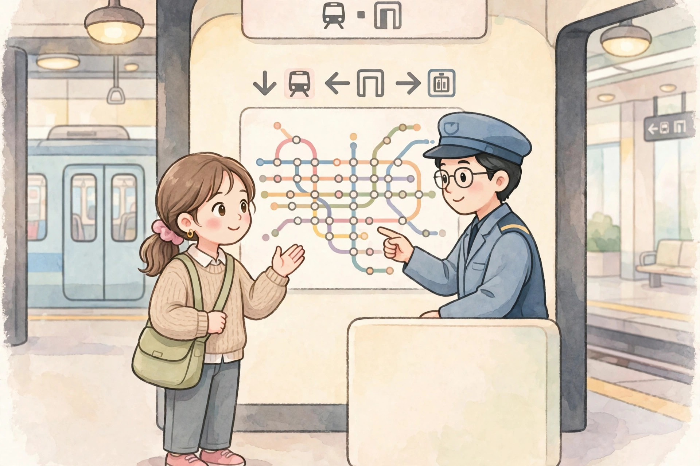

提示：如果頁面變成純文字、沒有圖片和播放按鈕，說明 Safari 閱讀器模式開了，點地址欄的書本圖標退出閱讀器，即可恢復彩色頁面。
地鐵問路
실례합니다, 시청역까지 어떻게 가요?
在地鐵站問路去市廳站，學搭線、換乘和下車的說法。

실례합니다, 시청역까지 어떻게 가요?
이 지하철을 타면 돼요? 아니면 갈아타야 해요?
2호선을 타고 두 정거장 가세요.
시청역에서 내리면 바로 앞에 있어요.
아, 알겠어요. 정말 감사합니다!
천만에요. 조심해서 가세요!
還沒播放，點上面的大按鈕開始。
慢速女聲朗讀，先聽一遍，再一句一句跟讀。如果大按鈕點了還是沒聲音，請點直接打開音頻，或點下面的備用朗讀。
逐句翻譯
- 不好意思，請問到市廳站要怎麼走？
- 搭這班地鐵就可以了嗎？還是要換乘呢？
- 請搭 2 號線，坐兩站。
- 在市廳站下車，前面就是了。
- 啊，我知道了。真的非常謝謝你！
- 不客氣。路上小心，慢慢走！
文法講解
1. 「-까지」：表示到達的地點或範圍
是什麼：表示到達的地點或範圍，意思像「到……為止」。句型結構：名詞 + -까지。短文例句：시청역까지 어떻게 가요?（到市廳站要怎麼走？）再舉一例：집까지 걸어서 가요.（走路走到家。）容易錯的地方：-까지 是「到」，不要和 -에서（在……／從……）混淆；說「從家到車站」時，起點用 -에서，終點用 -까지。
2. 「-면 돼요 / -으면 돼요」：表示條件
是什麼：表示條件，意思像「只要……就可以」。句型結構：動詞詞幹 + -면 돼요；詞幹母音是 ㅏ、ㅗ 時用 -면，其他時候用 -으면。短文例句：이 지하철을 타면 돼요?（搭這班地鐵就可以了嗎？）再舉一例：여기에 앉으면 돼요.（坐在這裡就可以了。）容易錯的地方：-면 돼요 是說「這樣做就行了」，語氣比較輕鬆；如果想正式地請求許可，要用 -아도 돼요（可以……嗎？），兩句話用法不一樣。
3. 「-세요」：禮貌的命令形
是什麼：禮貌的命令形，對別人說話時用，意思像「請……」。句型結構：動詞詞幹 + -세요。短文例句：두 정거장 가세요.（請坐兩站。）再舉一例：여기에 앉으세요.（請坐在這裡。）容易錯的地方：-세요 是敬語說法，對陌生人、長輩用很合適；和很熟的朋友說話時，用平語 가 就可以了，不用加 -세요。
常用詞彙
- 실례합니다 不好意思、失禮了（shil-lye-ham-ni-da）—— 向陌生人問路時，先說 실례합니다 再問問題，很有禮貌。
- 시청역 市廳站（shi-cheong-yeok）—— 시청역까지 어떻게 가요?（到市廳站要怎麼走？）
- 지하철 地鐵（ji-ha-cheol）—— 이 지하철을 타면 돼요?（搭這班地鐵就可以了嗎？）
- 갈아타다 換乘（gal-a-ta-da）—— 갈아타야 해요?（要換乘嗎？）
- 정거장 站（jeong-geo-jang）—— 두 정거장 가세요.（請坐兩站。）
- 내리다 下車（nae-ri-da）—— 시청역에서 내리세요.（請在市廳站下車。）
- 조심하다 小心（jo-shim-ha-da）—— 조심해서 가세요!（路上小心！）
- 천만에요 不客氣（cheon-man-e-yo）—— 別人說謝謝時，回答 천만에요。
跟讀小提示
問句句尾的 -어요? 要輕輕揚起來；「두 정거장 가세요」在「두」後面稍作停頓；「정말 감사합니다」的「정말」可以讀得重一點。
留給你的問題
당신은 지하철을 자주 타요?